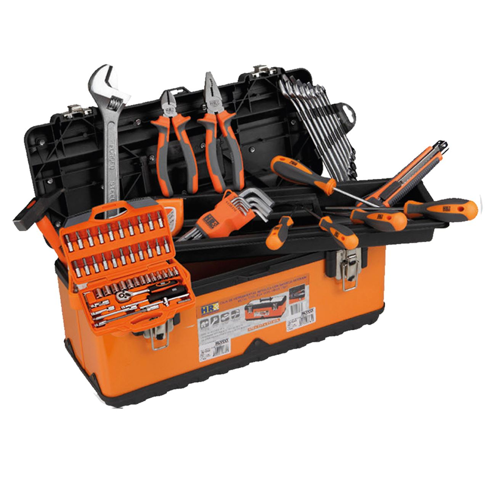

Esta es la página principal del Sistema de Gestión de Herramientas
Lo que se puede ver es:
- consultar el estado del Inventario en tiempo real.
- registrar la salida de material en la sección de Préstamos.
- ver los fallos en el apartado de Incidencias.

Lo que se puede ver es: